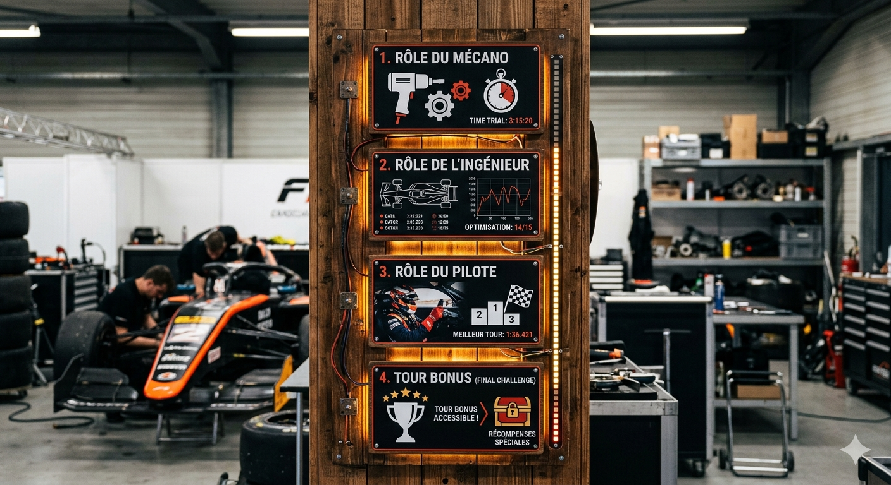

Dans le système de progression chaque actions (les différentes simulations) que tu fais te rapporte des points. Au plus tu es performant au plus tu va pouvoir monter de niveaux. Si tu participes régulièrement aux simulations tu peux obtenir des points bonus. Il y a un classement général de tous les participants et en fonction du classement il y a différentes récompenses à la clé comme des places VIP pour un grand prix, des accès aux paddocks, faire le tour du circuit avant la course (track wall) avec une écurie (le pilote et l’ingénieur), participer à la parade des pilotes (quand les pilotes font le tour de piste d’avant le grand prix)
Un arrêt au stand en Formule 1 ressemble à un véritable mini-jeu d’équipe : environ 20 personnes doivent changer les quatre pneus le plus rapidement possible, souvent en moins de 2,5 secondes, sauf en cas de problème ou de pénalité. Le record est de 1,8 seconde, établi par McLaren en 2023
Il faut aussi savoir gérer les imprévus, notamment les conditions météo. L’équipe doit rester réactive afin d’anticiper un changement de pneus si la pluie commence à tomber
Enfin, la gestion du timing des arrêts est essentielle : chaque membre doit être coordonné, concentré sur sa tâche et parfaitement synchronisé avec les autres pour garantir un arrêt le plus rapide et efficace possible
Après avoir réussis 4 simulations en tant que mécanos ça vous donne un accès prioritaire au niveau ingénieur
Avec la nouvelle réglementation, les équipes doivent obligatoirement utiliser au moins deux types de gommes différentes, ce qui impose généralement un arrêt au stand. En cas de safety car, cet arrêt est moins pénalisant car les voitures roulent au ralenti. Pour dépasser un concurrent, deux stratégies existent : l’undercut, qui consiste à s’arrêter plus tôt pour profiter de pneus neufs et prendre l’avantage lors de l’arrêt adverse, et l’overcut, qui consiste à prolonger son relais pour bénéficier de pneus plus frais en fin de course
Le choix des pneus est une responsabilité essentielle des ingénieurs de course. Une mauvaise décision peut fortement impacter la performance de la voiture et compromettre la course. Il est donc crucial d’analyser l’usure des pneus ainsi que l’état de la piste afin de déterminer le bon moment pour s’arrêter et sélectionner les gommes les plus adaptées
L’ensemble de ces décisions repose aussi sur une communication efficace avec le pilote. Il faut lui poser les bonnes questions concernant l’usure et le comportement des pneus, tout en choisissant le bon moment pour communiquer, afin de ne pas le perturber dans des phases critiques comme un virage difficile ou une tentative de dépassement
près avoir débloqué les deux autres niveaux, tu vas enfin pouvoir accéder au niveau pilote. Dans ce mode, tu incarnes directement le pilote et tu prends le contrôle de la voiture le temps d’un tour complet. L’objectif est de te faire vivre une immersion totale dans les conditions réelles d’une course, en ressentant la vitesse, les virages, les freinages et la précision nécessaire pour rester performant. Cela permet de mieux comprendre les sensations et les contraintes auxquelles un pilote est confronté, tout en découvrant la difficulté de maintenir un rythme constant sur un tour
Pour une expérience mémorable, tu pourras incarner le pilote à des moments clés de la course, comme le dernier tour, la lutte pour la pole position en qualifications, le départ — où un mauvais envol peut compromettre toute la course — ou encore lors des batailles intenses pour atteindre le podium